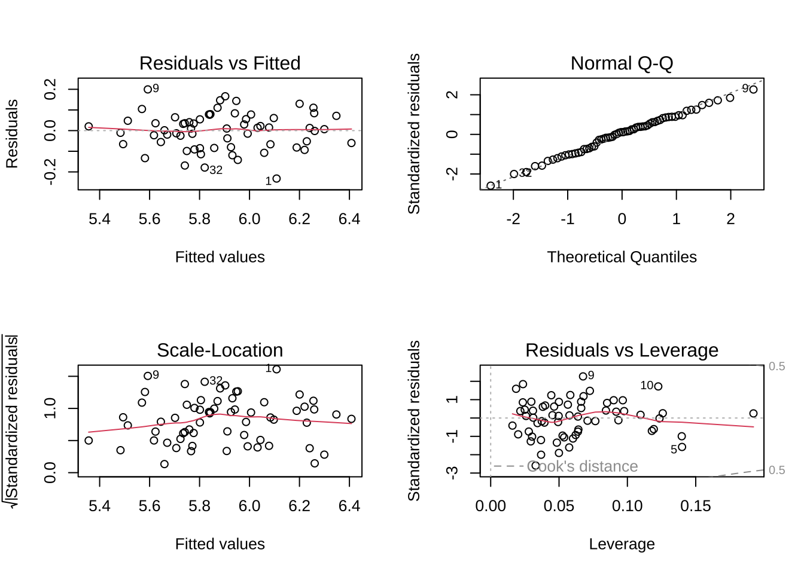
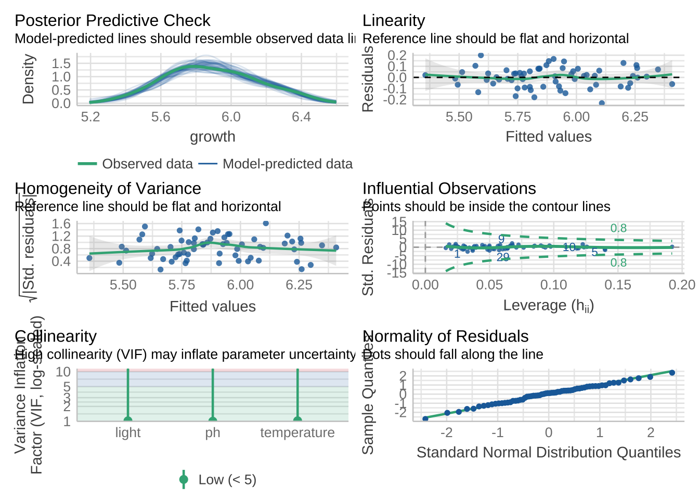
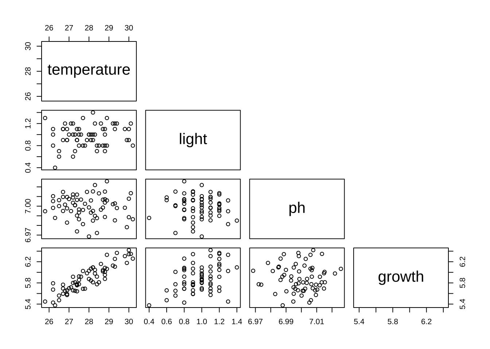
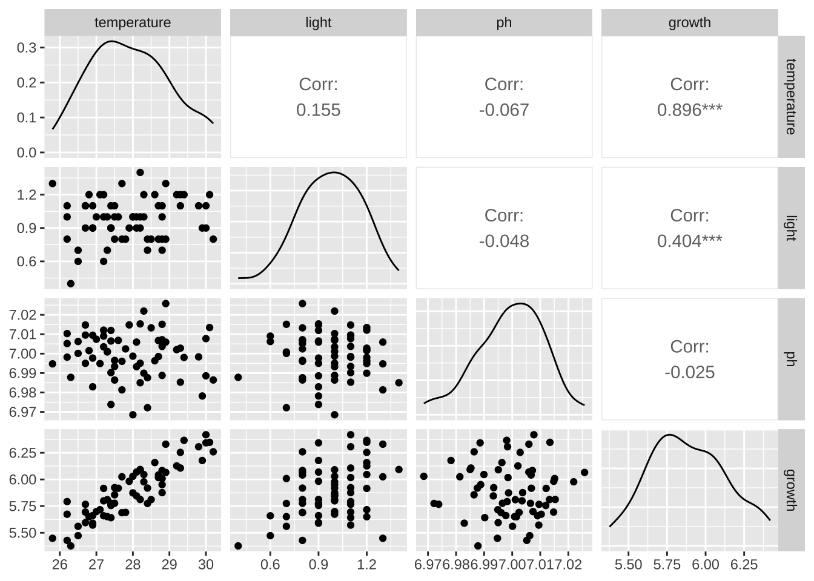
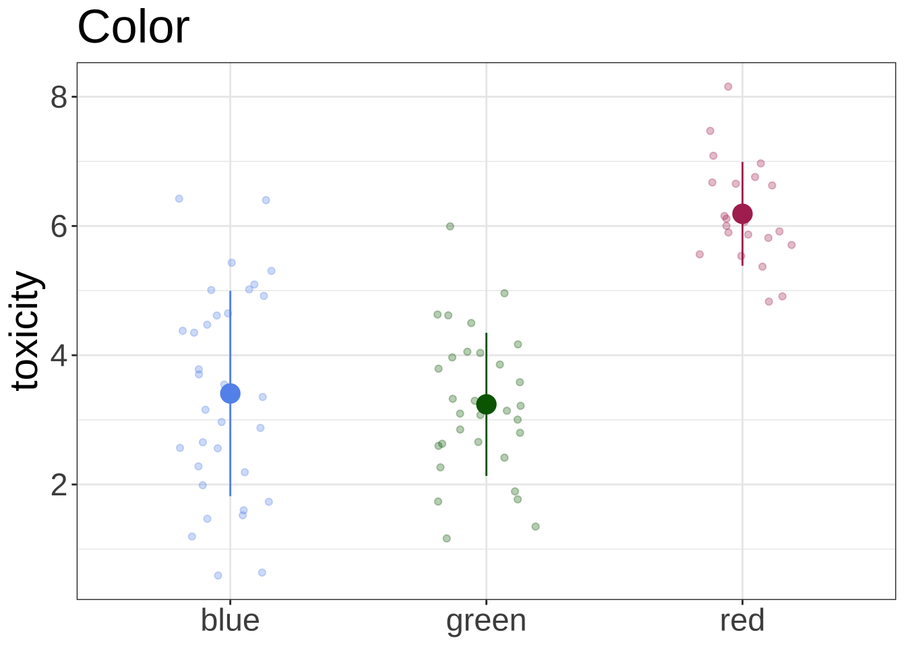
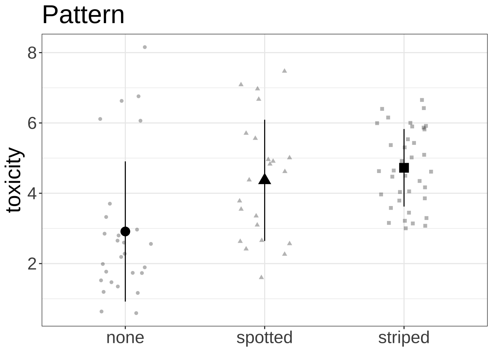
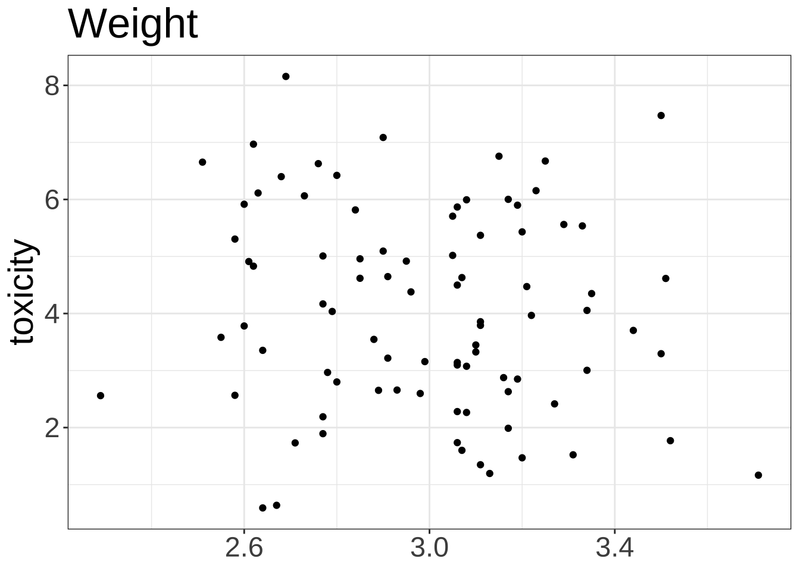
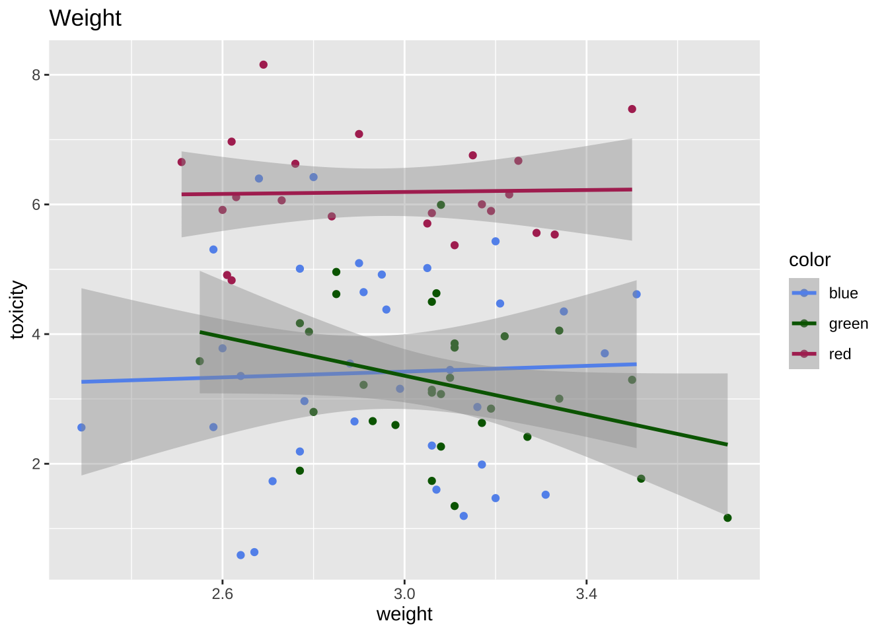
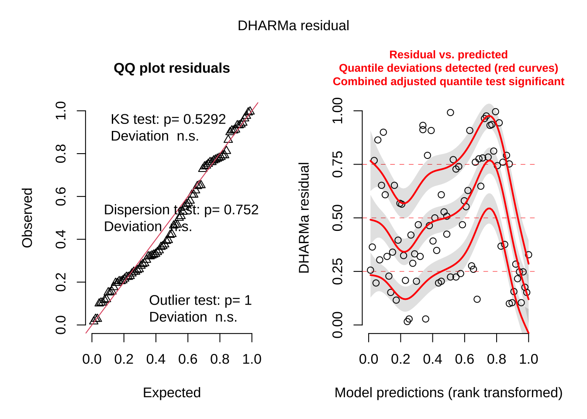
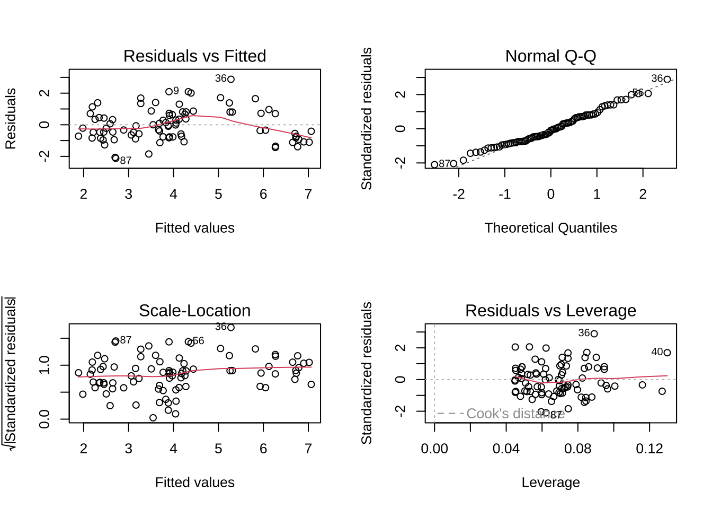

library(tidyverse)
library(palmerpenguins)
library(showtext)
library(car)
font_add_google("Lato", "Lato")
showtext_auto()
library(patchwork)
library(ggeffects)
library(performance)
library(broom)
library(flextable)
library(DHARMa)
library(GGally)multiple linear regression equation
\[ \begin{align} y &= \beta_0 + \beta_1x_1 + \beta_2x_2 + ... \beta_kx_k + \epsilon \end{align} \]
formulas
sum of squares for linear regression
regression (or model)
\[ SS_{reg} = \sum_{i = 1}^{n}(\hat{y} - \bar{y})^2 \]
error
\[ SS_{err} = \sum_{i = 1}^{n}(y_i - \hat{y})^2 \]
total
\[ SS_{tot} = \sum_{i = 1}^n(y_i - \bar{y}) \]
mean square
regression
\[ MS_{reg} = \frac{SS_{reg}}{1} \]
error
\[ MS_{err} = \frac{SS_{err}}{n - 2} \]
F-statistic
\[ F = \frac{MS_{reg}}{MS_{err}} \]
plant example
set.seed(666)
# sample size
n <- 64
plant_df <- tibble(
# predictor variables
temperature = round(rnorm(n = n, mean = 28, sd = 1), digits = 1),
light = round(rnorm(n = n, mean = 1, sd = 0.2), digits = 1),
ph = rnorm(n = n, mean = 7, sd = 0.01),
# response: growth in cm/week
growth = light*rnorm(n = n, mean = 0.3, sd = 0.1) + temperature/round(rnorm(n = n, mean = 5, sd = 0.1))
) plant_model <- lm(growth ~ light + temperature + ph, data = plant_df)par(mfrow = c(2, 2))
plot(plant_model)
check_model(plant_model)
pairs(plant_df, upper.panel = NULL)
ggpairs(plant_df)
cor(plant_df) temperature light ph growth
temperature 1.00000000 0.15540780 -0.06657697 0.89551840
light 0.15540780 1.00000000 -0.04769987 0.40397013
ph -0.06657697 -0.04769987 1.00000000 -0.02466729
growth 0.89551840 0.40397013 -0.02466729 1.00000000vif(plant_model) light temperature ph
1.026223 1.028447 1.005897 summary(plant_model)
Call:
lm(formula = growth ~ light + temperature + ph, data = plant_df)
Residuals:
Min 1Q Median 3Q Max
-0.23209 -0.06571 0.01010 0.06173 0.19950
Coefficients:
Estimate Std. Error t value Pr(>|t|)
(Intercept) -6.67140 6.80194 -0.981 0.331
light 0.35196 0.05939 5.926 1.63e-07 ***
temperature 0.19626 0.01058 18.558 < 2e-16 ***
ph 0.96241 0.96806 0.994 0.324
---
Signif. codes: 0 '***' 0.001 '**' 0.01 '*' 0.05 '.' 0.1 ' ' 1
Residual standard error: 0.0911 on 60 degrees of freedom
Multiple R-squared: 0.8759, Adjusted R-squared: 0.8696
F-statistic: 141.1 on 3 and 60 DF, p-value: < 2.2e-16anova(plant_model)Analysis of Variance Table
Response: growth
Df Sum Sq Mean Sq F value Pr(>F)
light 1 0.65459 0.65459 78.8700 1.567e-12 ***
temperature 1 2.85039 2.85039 343.4377 < 2.2e-16 ***
ph 1 0.00820 0.00820 0.9884 0.3241
Residuals 60 0.49797 0.00830
---
Signif. codes: 0 '***' 0.001 '**' 0.01 '*' 0.05 '.' 0.1 ' ' 1For example, temperature F-value:
2.85039/0.0083[1] 343.4205\[ \begin{align} F &= \frac{2.85039}{0.00830} \\ &= 343.4205 \end{align} \]
frog example
generating data
set.seed(666)
frog_n <- 87
df <- cbind(
# predictor variables
color = sample(x = c("blue", "green", "red"), size = frog_n, replace = TRUE, prob = c(0.3, 0.3, 0.3)),
weight = (round(rnorm(n = frog_n, mean = 3, sd = 0.3), 2)),
pattern = sample(x = c("striped", "spotted", "none"), size = frog_n, replace = TRUE, prob = c(0.3, 0.3, 0.3))
) %>%
as_tibble() %>%
mutate(weight = as.numeric(weight),
color = as.factor(color),
pattern = as.factor(pattern)) %>%
group_by(color, pattern) %>%
# response variable
mutate(toxicity = case_when(
color == "blue" & pattern == "striped" ~ rnorm(n = length(color), mean = 5, sd = 1),
color == "blue" & pattern == "spotted" ~ rnorm(n = length(color), mean = 4, sd = 1),
color == "green" & pattern == "striped" ~ rnorm(n = length(color), mean = 4, sd = 1),
color == "green" & pattern == "spotted" ~ rnorm(n = length(color), mean = 3, sd = 1),
color == "red" ~ rnorm(n = length(color), mean = 6, sd = 1),
TRUE ~ rnorm(n = length(color), mean = 2, sd = 1)
)) %>%
ungroup()plotting data
blue_col <- "cornflowerblue"
green_col <- "darkgreen"
red_col <- "maroon"
striped_col <- "grey1"
spotted_col <- "grey50"
none_col <- "grey80"
ggplot(data = df, aes(x = color, y = toxicity, color = color, fill = color)) +
geom_jitter(width = 0.2, height = 0, alpha = 0.3) +
scale_color_manual(values = c("blue" = blue_col, "green" = green_col, "red" = red_col)) +
scale_fill_manual(values = c("blue" = blue_col, "green" = green_col, "red" = red_col)) +
stat_summary(geom = "pointrange", fun = mean, fun.min = function(x) mean(x) - sd(x), fun.max = function(x) mean(x) + sd(x), shape = 21, size = 1) +
# geom_point(position = position_jitter(width = 0.2, height = 0, seed = 666), alpha = 0.3) +
labs(title = "Color") +
theme_bw() +
theme(legend.position = "none",
axis.title.x = element_blank(),
text = element_text(size = 22))
ggplot(data = df, aes(x = pattern, y = toxicity, shape = pattern)) +
geom_jitter(width = 0.2, height = 0, alpha = 0.3) +
# scale_color_manual(values = c("blue" = blue_col, "green" = green_col, "red" = red_col)) +
# scale_fill_manual(values = c("striped" = striped_col, "spotted" = spotted_col, "none" = none_col)) +
stat_summary(geom = "pointrange", fun = mean, fun.min = function(x) mean(x) - sd(x), fun.max = function(x) mean(x) + sd(x), size = 1) +
labs(title = "Pattern") +
theme_bw() +
theme(legend.position = "none",
axis.title.x = element_blank(),
text = element_text(size = 22))
ggplot(data = df, aes(x = weight, y = toxicity)) +
geom_point() +
# geom_smooth(method = "lm") +
labs(title = "Weight") +
theme_bw() +
theme(legend.position = "none",
axis.title.x = element_blank(),
text = element_text(size = 22))
ggplot(data = df, aes(x = weight, y = toxicity, color = color)) +
geom_point() +
scale_color_manual(values = c("blue" = blue_col, "green" = green_col, "red" = red_col)) +
geom_smooth(method = "lm") +
labs(title = "Weight")
model
model <- lm(toxicity ~ weight + color + pattern, data = df)
simulateResiduals(model, plot = TRUE)
Object of Class DHARMa with simulated residuals based on 250 simulations with refit = FALSE . See ?DHARMa::simulateResiduals for help.
Scaled residual values: 0.208 0.608 0.196 0.468 0.744 0.792 0.908 0.792 0.992 0.256 0.324 0.768 0.468 0.32 0.204 0.908 0.288 0.76 0.156 0.104 ...diagnostics
par(mfrow = c(2, 2))
plot(model)
model summary
# F-statistic: 31.05 on 5 and 81 DF, p-value: < 2.2e-16
# total SSE - SSE of residuals divided by degrees of freedom
totalSSE <- 6.932+140.09+21.63
totaldf <- 1+2+2
errorSSE <- 88
model_fstat <- (totalSSE/5)/(errorSSE/81)
model_fstat[1] 31.0473# for a single coefficient
weightMS <- 6.932
weightdf <- 1
errorMS <- 1.086
fvalweight <- (weightMS/weightdf)/errorMS
fvalweight[1] 6.383057colorMS <- 70.045
colordf <- 2
fvalcolor <- (colorMS/colordf)/errorMS
fvalcolor[1] 32.24908# residual mean sq = 1.086 (denominator)
# equation: t = 5.5 - 0.74*W - 0.97*green + 2.1*red + 0.85*spotted + 1.2*stripedsummary(model)
Call:
lm(formula = toxicity ~ weight + color + pattern, data = df)
Residuals:
Min 1Q Median 3Q Max
-2.1236 -0.7663 -0.0927 0.7146 2.8783
Coefficients:
Estimate Std. Error t value Pr(>|t|)
(Intercept) 4.0450 1.2613 3.207 0.00192 **
weight -0.5038 0.4229 -1.191 0.23698
colorgreen -0.2893 0.2673 -1.082 0.28232
colorred 2.5885 0.2904 8.914 1.17e-13 ***
patternspotted 0.9517 0.3029 3.142 0.00234 **
patternstriped 1.6957 0.2644 6.413 8.92e-09 ***
---
Signif. codes: 0 '***' 0.001 '**' 0.01 '*' 0.05 '.' 0.1 ' ' 1
Residual standard error: 1.044 on 81 degrees of freedom
Multiple R-squared: 0.6714, Adjusted R-squared: 0.6511
F-statistic: 33.1 on 5 and 81 DF, p-value: < 2.2e-16anova(model)Analysis of Variance Table
Response: toxicity
Df Sum Sq Mean Sq F value Pr(>F)
weight 1 3.955 3.955 3.6279 0.06037 .
color 2 131.602 65.801 60.3589 < 2.2e-16 ***
pattern 2 44.843 22.421 20.5669 5.981e-08 ***
Residuals 81 88.304 1.090
---
Signif. codes: 0 '***' 0.001 '**' 0.01 '*' 0.05 '.' 0.1 ' ' 1Citation
BibTeX citation:
@online{bui2023,
author = {An Bui},
editor = {},
title = {Lecture 08 Figures},
date = {2023-05-22},
url = {https://an-bui.github.io/ES-193DS-W23/lecture/lecture-08_2023-05-22.html},
langid = {en}
}
For attribution, please cite this work as:
An Bui. 2023. “Lecture 08 Figures.” May 22, 2023. https://an-bui.github.io/ES-193DS-W23/lecture/lecture-08_2023-05-22.html.